순서도
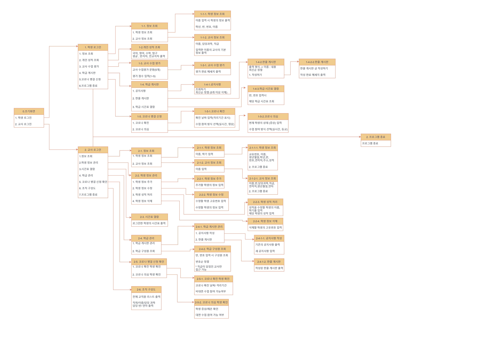
메인 화면
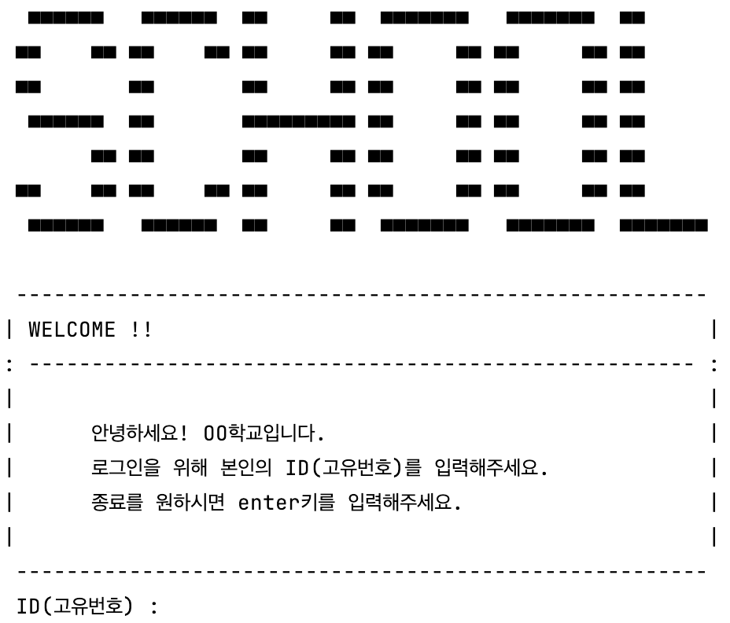
학생 메뉴
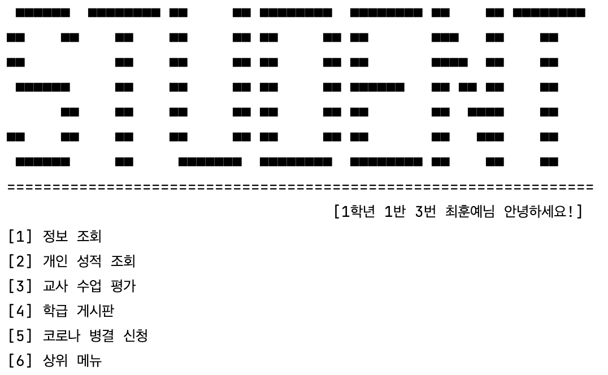
학생 - 성적조회
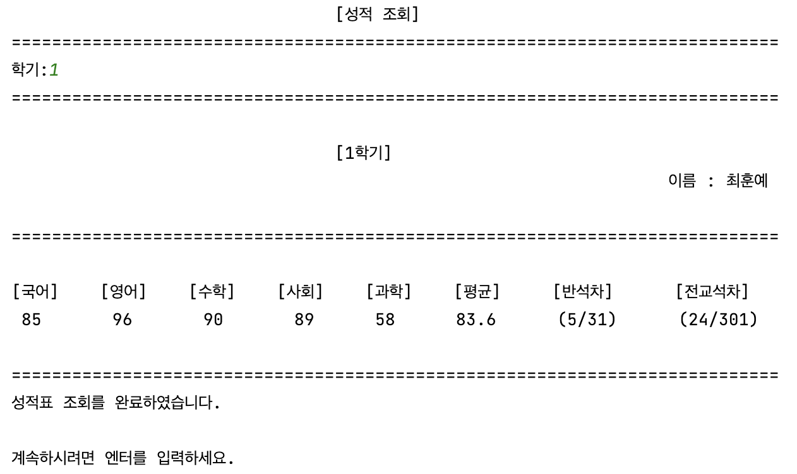
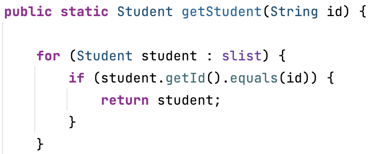
학생이 원하는 학기를 입력하면 성적을 조회하는 기능입니다.
getStudent 메서드를 사용하여 본인의 성적만 조회할 수 있도록 구현했습니다.
교사 메뉴
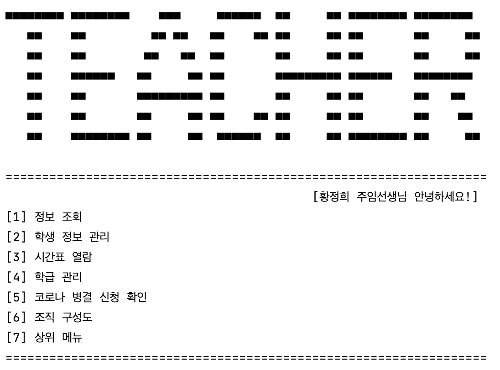
교사 - 성적수정
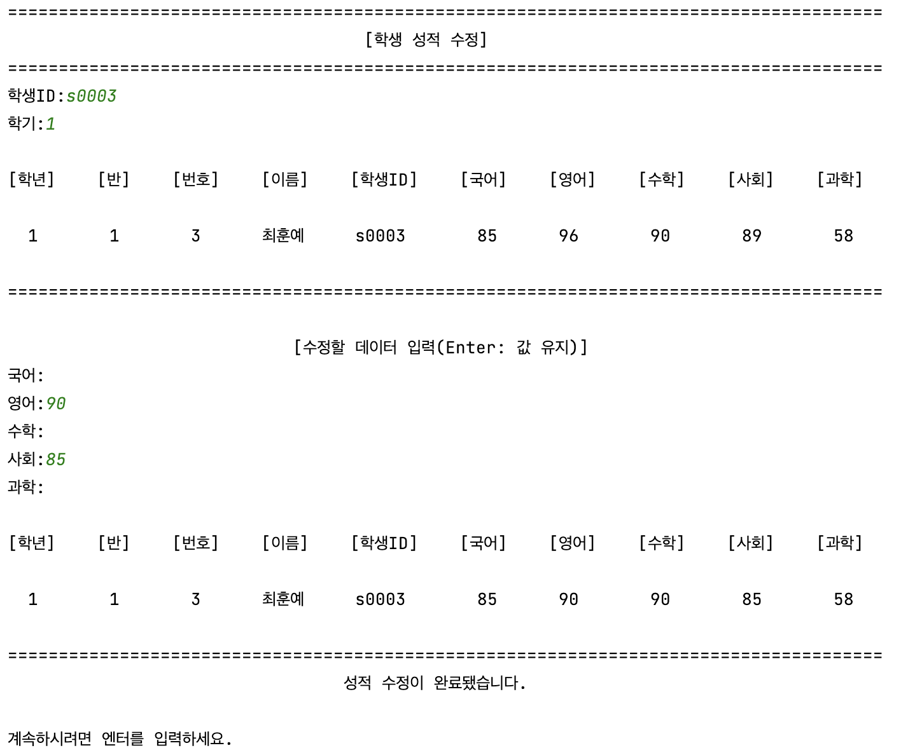
학생 아이디와 학기를 입력받은 후 엔터를 입력하면 점수를 유지하고 수정하고 싶은 과목에 점수를 입력하여 성적을 수정하는 방식으로 구현했습니다.
정보조회
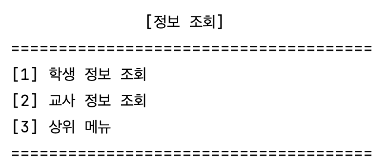
학생 - 정보조회
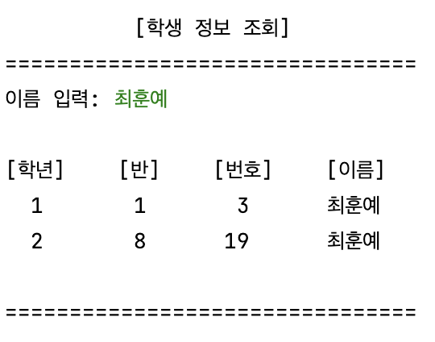
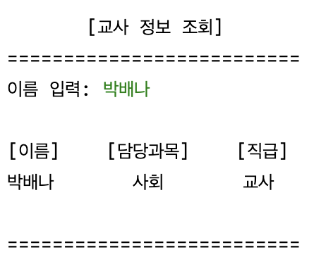
학생의 정보 조회 메뉴는 검색한 학생의 학년, 반, 번호, 이름, 검색한 교사의 이름, 담당 과목, 직급만 출력되도록 구현했습니다.
교사 - 정보조회
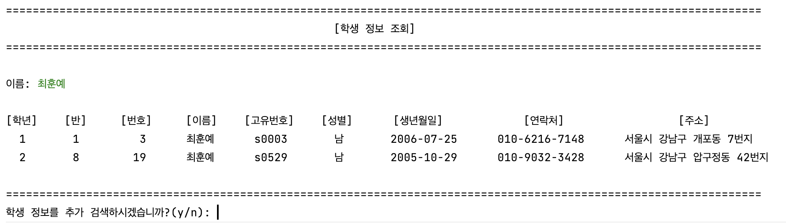
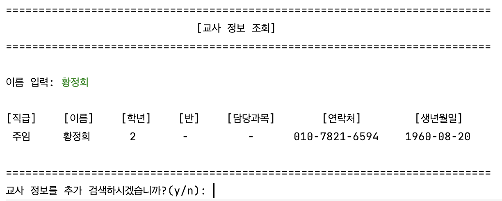
교사의 정보 조회 메뉴는 검색한 학생과 교사의 모든 정보를 조회할 수 있도록 구현했습니다.